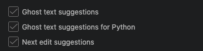

Refactoring Code with GitHub Copilot
Last updated on 2026-06-18 | Edit this page
Estimated time: 10 minutes
Overview
Questions
- What are the different ways to use Copilot to refactor code?
- What is the difference between inline suggestions, plan mode, and agent mode?
- Why is it important to review and critically evaluate AI-generated code suggestions?
- How can plan mode help structure a refactoring task before making any changes?
- What risks should you consider when delegating larger-scale code changes to an AI agent?
Objectives
- Describe the three Copilot refactoring modes (inline suggestions, agent mode, plan mode) and when each is appropriate
- Use inline suggestions and agent mode to make targeted, small-scale code changes
- Apply plan mode to generate and review a structured refactoring plan before implementing changes
- Evaluate AI-generated code suggestions to identify whether changes are correct and maintainable
- Appreciate the importance of increasing skepticism and review as the autonomy and scope of AI-assisted changes increases
In the previous episode we looked at Copilot giving us guidance and advice to improve our code. In this episode, we’ll look at how Copilot can assist with code modifications more directly, looking at the following features:
-
Inline suggestions- where Copilot provides coding suggestions as you type -
Plan mode- where an built-in Copilot agent explores our codebase and generates a step-by-step plan for improvement -
Agent mode- where Copilot directly and autonomously undertakes either small or large scale changes on request, with a single option to approve the changes at the end of the process
These are in ascending order of autonomy, authority and scope that we delegate to Copilot to make changes. As we’ll see, as we delegate more authority and scope, the more we should increase our skepticism and diligence in reviewing and understanding suggestions made by such tools.
Inline Suggestions
Within VSCode, Copilot can provide “inline” suggestions as we type, which go much further than typical IDE autocomplete suggestions.
If we select the Copilot icon again in the status bar, we can see the current inline settings:

So here, we can see that inline settings will apply to all Python
files. These suggestions will appear as “ghosted text” suggestion which
you can autocomplete with tab, very similar to how they appear with
standard VSCode autocomplete. There are also
Next edit suggestions which go beyond the immediate context
to make suggestions in other places in your code. These predict the
location and the content of the next edit you’ll want to make.
Let’s say we want to add a new section describing our coding style. Add the following at the bottom of the file:
You should see a suggestion appear direcly after your cursor,
something like Use PEP 8 style guidelines for Python code,
Use descriptive variable names (e.g., data, mean_plot, max_plot, min_plot)
or similar. You can accept this suggestion by pressing Tab.
If you continue to add new lines after this, you may find it continues
to suggest other things to include, so we end up with, for example:
MARKDOWN
### Coding Style
- Use descriptive variable names (e.g., `inflammation_data`, `mean_inflammation`)
- Follow PEP 8 for formatting (indentation, spacing)
- Comment code sections for clarity, especially data processing stepsIt does this by rapidly incorporating contextual information from a number of sources to infer a suggestion, including:
- The code file you are editing
- Any code you have currently selected
- Frameworks, languages and dependencies
- Any instructions file
Copilot suggestions are a starting point, but we should alwyays review, understand, and amend as necessary, as opposed to blindly accepting suggestions.
Amend the Suggestions
3 mins.
Read through and understand the Copilot suggestions for the Coding
Style section of the copilot-instructions.md file, and
add/amend as you see fit, perhaps to fit your coding style.
For example:
MARKDOWN
### Coding Style
- Follow PEP 8 style guidelines for Python code
- Use descriptive variable names (e.g., `inflammation_data`, `mean_inflammation`)
- Comment code sections for clarity, especially to explain purpose and logic, and to describe data processing stepsAs we’ll see shortly, these coding style guidelines will inform future refactoring of our code.
Of course, we can also do this for code. In
inflammation-plot.py, begin adding an additional parameter
to the functions calls in the code, by placing an additional
, at the end of the given list of parameters, and see which
inline suggestions are being made, e.g.:
For example, you might see:
If we approve this change and then do the same for the other
axes2 and axes3 variables, it suggests
variants of that for the other calls to plot, e.g.
So the suggestions made are based on the context of the code you are
editing: it’s generating the most likely suggestions based on what we’ve
entered before. We’ve added a color parameter to a previous
.plot call, so doing something similar for other
.plot calls is likely.
Agent Mode: What about Small Changes?
Agent mode differs from inline suggestions by offering the ability to enact changes step-by-step directly on your approval. Unlike inline suggestions which appear as you type, this mode allows you to request broader changes across multiple lines or functions, so it’s ideal for repetive things like small-scale refactoring of code logic or renaming variables. It represents a middle ground in terms of autonomy — more direct than inline suggestions but less autonomous than Plan mode.
To get started with using Copilot to make a small edit, you highlight the code you want to modify before requesting the change you want.
For example:
- Select
+to create a new chat conversation - Select
inflammation-plot.pyin the chat context - Select
Askas the Copilot mode in the chat window - Select a model of your choice
- Select the entire for loop in
inflammation-plot.py; you’ll notice that the context now includes this file with the selected line numbers - Enter
Add a comment about this code above this loop - Press
Enter
You’ll now see a comment added above the loop highlighted in green, e.g.
PYTHON
# Process each inflammation data file and generate a 3-panel visualization
# showing the mean, maximum, and minimum inflammation values across patientsYou’ll also see a Keep or Undo pop-up
displayed at the bottom. Read through the comment, and if you agree that
the comment summarises the code sufficiently, select
Keep.
The Temptation to Blindly Accept!
So note that here, we properly scrutinise the suggestion as opposed to accepting it blindly! it would be all too easy to just assume it’s correct and just accept it, but it’s helpful to remember that tools like Copilot are like a more helpful autocomplete, not a thinking teammate. As such, skepticism and review must become a key practice when using such tools.
Plan Mode: Creating a Plan for Refactoring
We could now use agent mode to do larger-scale changes, such as refactoring our entire codebase. However. instead of “one-shotting” the development of code using generative AI, a far better approach is to plan and implement our code in a step-wise, incremental fashion. This way, we can understand and review changes before they are implemented. So how should we go about this?
Let’s use the built-in VSCode plan agent that helps developers break down tasks into clear and actionable steps before writing code. Instead of jumping straight into implementation, it researches the requested task, analyses any existing project code in read-only mode, and generates structured step-based plans for features or for other code modification activities. In short, it aims to guide users through a thoughtful planning phase prior to coding to reduce errors and encourage better design and implementation decisions.
Let’s try it out now.
Select
Planfrom the Copilot mode dropdown in the chat panel.Select
Claude Haiku 4.5selected in the model dropdown-
Enter the following into the chat:
How should I refactor this code to make it more modular, readable, and documented? Press
Enter.Answer any clarifying questions from the planning agent.
Observe the step-by-step thinking and actions undertaken by the agent.
When the planning agent concludes, select the option to
Open in Editor, andKeep.Save the file that appears by selecting
Save as prompt filewhich should appear in the bottom right of the editing window.
You should find you end up with something similar to this, saved as a
prompt file (either in the repository root or in the
.github/prompts directory), although the content will
likely differ:
Just by itself, this feature is incredibly useful. We should of course review the plan and ensure it’s suggestions are suitable and in line with what we want from this codebase and amend it appropriately, and once ready, we could then manually follow this plan and implement the changes. That way, we maintain full control of those changes.
The review and refine component is particularly important. We should ask questions such as:
- Does the change solve the actual requirement, or only a plausible-looking version of it?
- Has the AI changed anything outside the intended scope?
- Is the proposed design consistent with the existing architecture and coding conventions?
- Is the code simple enough to understand, maintain, and review?
- Are there meaningful new or updated tests that prove the change works?
- Could the change introduce security, privacy, licensing, or performance risks?
- Are any dependencies, generated code, or copied patterns acceptable for the project?
- Can a human developer explain and take responsibility for every part of the change?
Essentially, amend the plan until it is within the scope of what is required, using techniques, design choices, and technologies that we understand, for which we are capable of taking responsibility to adapt and maintain in the future. If we can’t do these things, we need to refine the plan.
Agent Mode: Larger-scale Changes
We can also ask Copilot in agent mode to make much larger, potentially multi-file changes across our codebase. So instead of asking Copilot to change a specific piece of code, you give it a goal, such as adding a feature, or refactoring a module. Copilot then plans how to achieve that goal and works across the repository to do so. It may read and modify multiple files, add or update tests, adjust configuration, and iterate over several steps before presenting the result. In this way, agent mode behaves more like a junior developer taking on a task, rather than a pair programmer responding line-by-line.
Note the increase in authority to modify code, which represents a much greater risk: the impact of changes is greater and requires more careful (and potentially more involved) review.
Since we’ve already come up with a plan for refactoring our code, let’s now use agent mode to follow this plan and implement the changes.
- Select
+to create a new chat conversation - Select
inflammation-plot.pyin the chat context - Set Copilot’s mode to
Agent - Select
Claude Haiku 4.5from the models dropdown - Enter the following chat prompt:
Refactor the code following the plan - Once suggested improvements appear, review the changes and either:
- If you agree with them and think they are an improvement on the
original code,
Keepthe suggestions - If you don’t agree with them, cancel the suggestions and select the
circular
Retryicon at the bottom left of the chat response until you get something more acceptable
- If you agree with them and think they are an improvement on the
original code,
An example of output:
PYTHON
So in this instance, we can see that there are a whole swathe of changes:
- Modularised the codebase by refactoring into four functions: use of a main function called from the top-level script, for loading a CSV file, generating a plot for a set of data, and processing a particular inflammation file
- Docstrings have been added for each of the functions and the module
- The processing of the average, maximum and minimum values has been refactored into a loop iterating over a data structure
- The subplots are generated within a loop using
zip()to provide corresponding pairs of array elements into the loop. If we didn’t like this particular style, we might use Edit mode on this segment to simplify it
Note that it differs substantially from the version shown from a similar question made in Ask mode earlier, and whilst it is more modular, it’s now 127 lines of code where before it was 32 lines - we might consider this to be quite an over-engineered overkill.
What if I don’t get a Good Response?
If you aren’t getting a good response despite retrying several times, it suggests that the prompt is either not reflective of what you’re really after or isn’t specific enough, so try amending the request.
Now once the suggestions have been integrated, we’re still able to
undo these changes, e.g. either by selecting Edit and
Undo from the VSCode menu, or pressing
Ctrl + Z (or Cmd/Windows Key + Z). We’re also
able to edit a previous prompt in the chat window, perhaps adding more
specifics for what we want.
- Copilot offers three levels of refactoring support: inline suggestions, agent mode, and plan mode, in ascending order of autonomy and scope.
- Inline suggestions appear as ghosted text while typing and are driven by immediate code context.
- Agent mode can make targeted edits across multiple lines or functions when given a specific instruction.
- Plan mode analyses the codebase and produces a step-by-step refactoring plan without making any changes, enabling review before implementation.
- AI-generated suggestions should always be reviewed and understood before accepting; increasing autonomy requires increasing scrutiny.